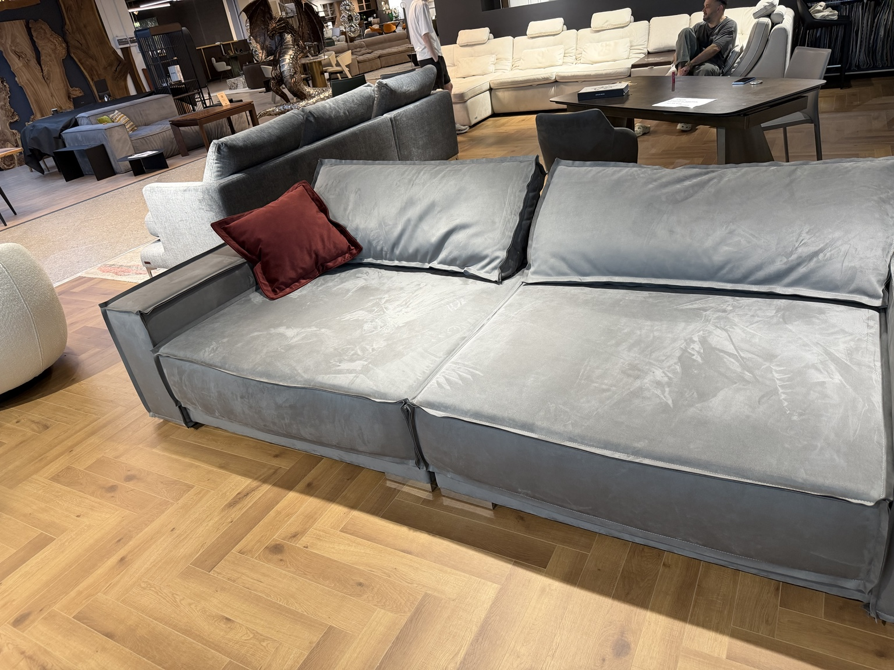
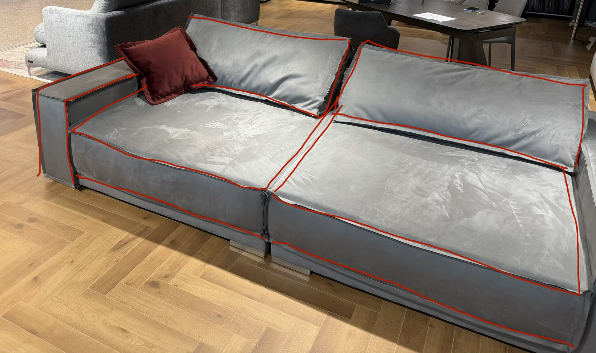

PRODUCT VISUALIZATION
Визуализация
будущего изделия.
Согласовать форму, материал и детали до запуска мебели в производство.
ПРОЦЕСС
Рабочие исходники —
вторичны.
Исходная фотография, разметка и материал нужны как доказательство процесса. Главный визуальный акцент — согласованный результат.



РЕЗУЛЬТАТ
Один визуальный
ориентир для всех.
Клиент, дизайнер и производство заранее видят согласованный характер изделия.

Исходник → разметка → материал.
Финальный образ — до производства.
ДРУГИЕ КЕЙСЫ ОТУТТО